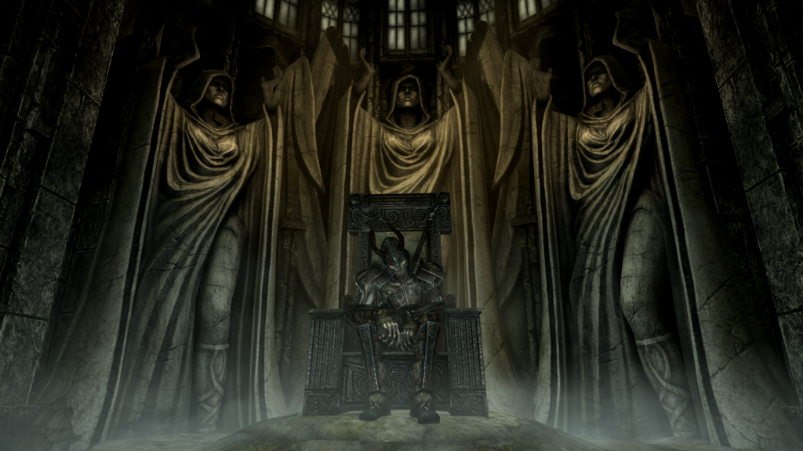

Darken Order: Temple of the Darken Lady
(Originally posted on 21.01.2021)

What
A mod for Elder Scrolls V: Skyrim A fortress located southeast of Northwatch Keep
Why
To give the player a third skill option – Conjuration in addition to Archery and Destruction – for ranged attacks. To give more power and role playing options for Death Knights and Necromancers.
Design
Intensive and packed with combat, secret rooms, and puzzles. Lore given more precedence over traditional level design principles. Capable to build mods dependent – from a technical and lore point of view – on this.
Loot
Available
